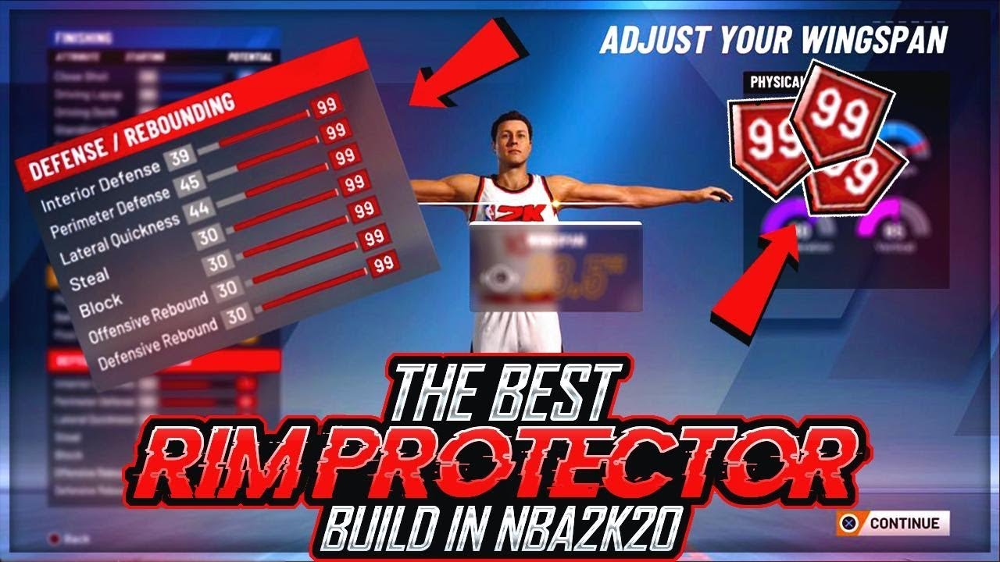

About
NBA 2K is a basketball game where you can create your own character, play on any team, and play onlne in park with friends or random play to dominate the court
Terminology
Noob: A new player
park: online games to play with friends in Mycareer
builds

Positions
- Point Guard
- Shooting Guard
- Small Forward
- Power Forward
- Center
Archetypes
Point Guard
- Sharpshooting Playmaker
- Playmaking Sharpshooter
- Shot-Creating Sharpshooter
- Shot-Creating Slasher
- Playmaking Shot Creator
Shooting guard
- Pure Sharpshooter
- Sharpshooting Shot Creator
- Pure Lockdown Defender
- Two Way Slasher
- Slashing Shot Creator
Small Forward
- Pure Lockdown Defender
- Two Way Sharpshooter
- Shot Creating Sharpshooter
- Slashing Defender
- Sharpshooting Slasher
Power Forward
- Sharpshooting Rebounder
- Slashing Stretch
- Shot Creating Post Scorer
- Two Way Athletic Finisher
- Sharpshooting Rim Protector
Center
- Pure Glass Cleaner
- Pure Rim Protector
- Sharpshooting Rebounder
- Rebounding Post Scorer
- Rebounding Athletic Finisher
The Creation
Features
- Facial Features
- Bodily features(height and weight)
Part 1:
You can use a face scanner if you would like.
Creating your Face
- fully edit your cheeks,mouth,jaw,etes,nose,forehead, ears.
- customize your hair with many shades, color and designs.
Part 2:The body
- you can edit the hieght, weight and wing span of your character.
- But depending on how you edit them it will increase some stats and decrease them.
Further development
The arctypes can be further detailed so centers cant be too good from the three and smaller players have a harder time gaurding big men but are faster